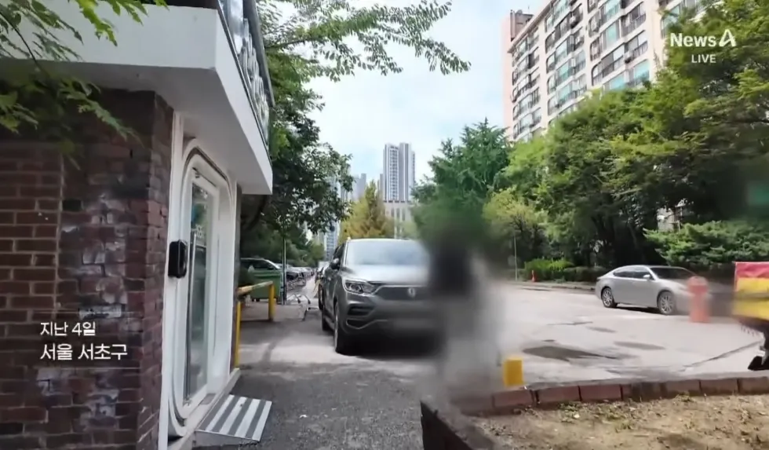
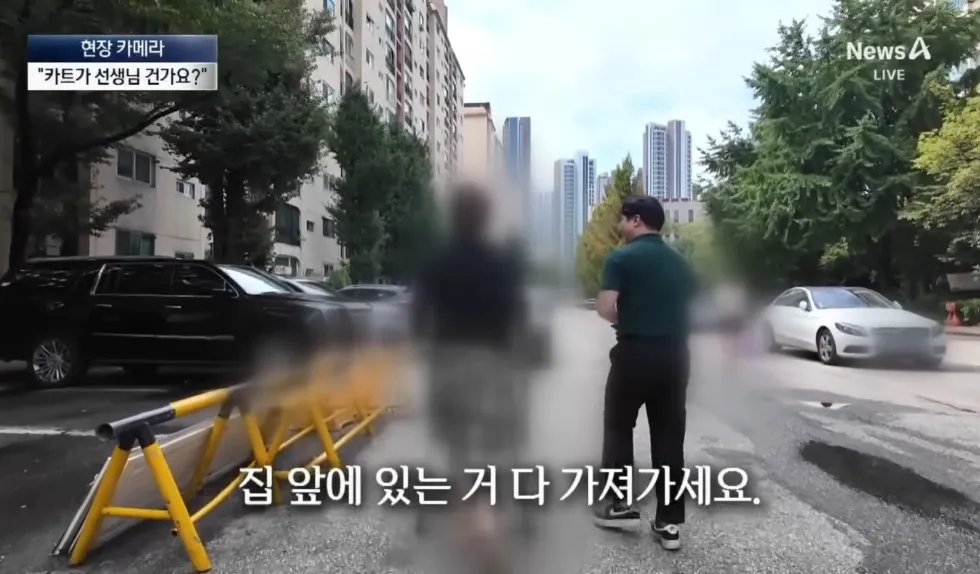
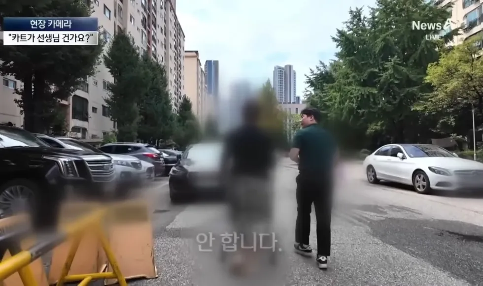
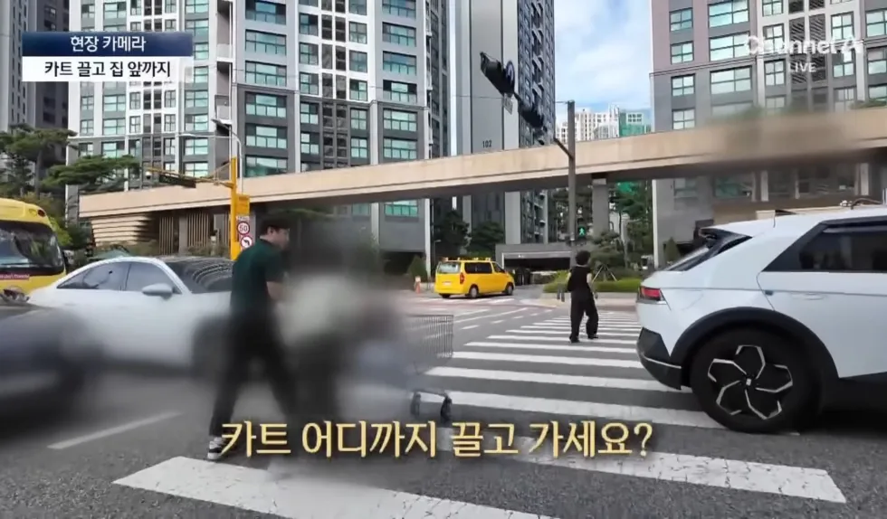
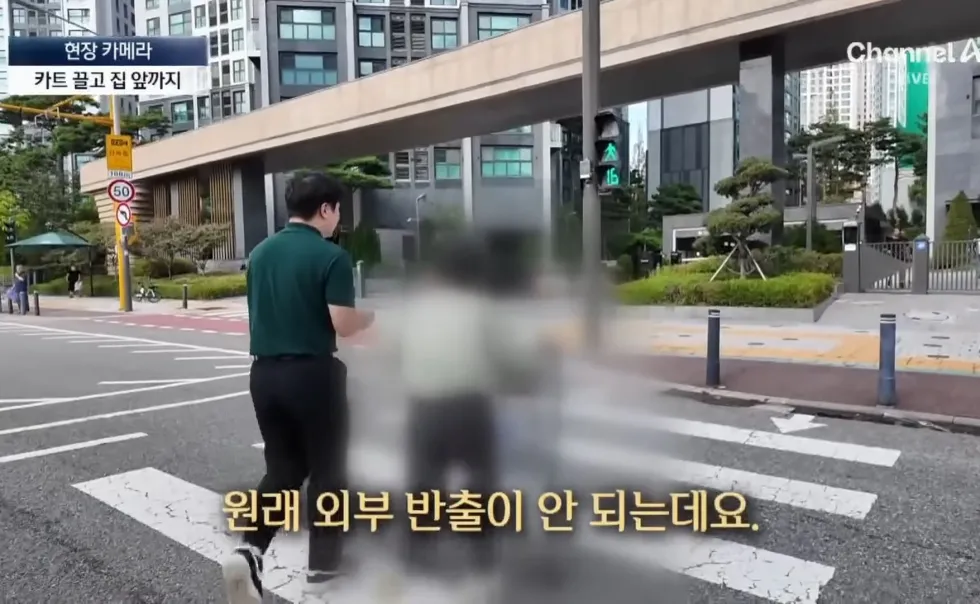
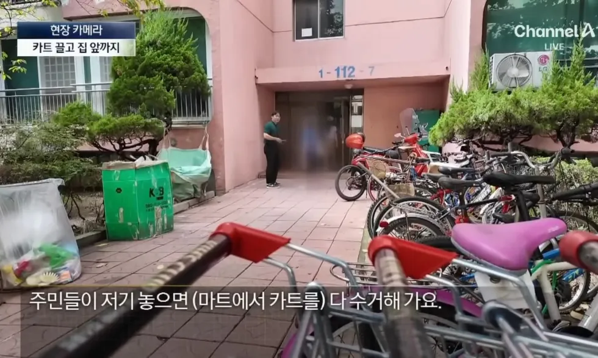
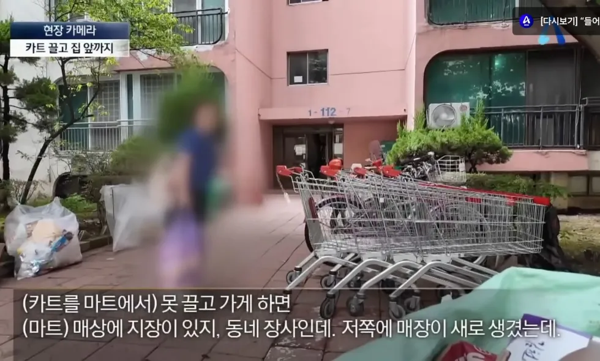
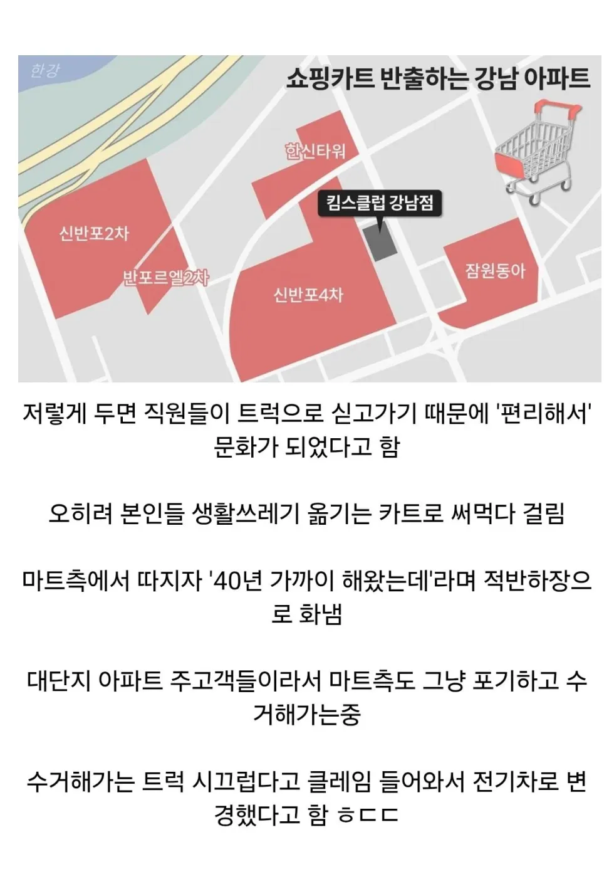

안되겠다 인도경찰 투입!!
시발 ㅋ 상식이형 불러와라 ㅋ


저거 그냥 입구에 턱만 설치해도 부딪히지도않고 못가져갈텐데
턱 설치하니까 들어서 가져가더라 ㅋㅋ 아지매들 힘도 좋아
저거 그렇게 들때 개무거울텐데. 그 힘이면 어지간한 장본거 들고갈수 있다에 내 띵털 4가닥 건다.
좋은게 좋은거지를 방치한 결과
니가 선택한거다
상놈이라 그런건데 어쩔겨
21세기인것을 한탄해라
저기가 70억씩이나해??
미개하다 미개해
아파트 가격이 오른거지 사람의 품격이 오른게 아니니까 ㅋㅋ
저거 끌고 다니면 무빙워크에서 고정 안되가지고
사고날확률 매우 올라감
관리 열심히 하겠지만 한번만 사고 나도 사람 죽을수도 있음
짐 가득실린 카트가 에스컬레이터 위에서 쭉 내려온다 생각하니 개무서운데;
실질적 거지새끼 마인드
이거 근데 여기만 문제가아니라 아파트 단지보면 저러는 경우 종종있음 볼때마다 진짜
ㄹㅇ 우리 아파트랑 옆 단지 아파트도 바로 옆에 홈플러스 폐업하기 전까지는 카트 끌고 오는 인간들 ㅈㄴ많았었음
오냐오냐 했더니 호로새끼들 되어있네 븅신들 ㅋㅋㅋㅋ
강남이 졸부 이미지를 못 벗어나는 이유
졸라부자?
졸렬한 부자
노블레스 오블리주 ㄷㄷㄷㄷ
마트 입구에서 볼라드로 다 막아서 못빼게 하면 되는거아님?
물건값에반영하면되잖아
외부반출이 안되는거 몰랐다는듯이 대답하지만 몰랐을리가 없음. 걍 하면 안되는거 알면서도 하는게 새치기 쨩꺠, 흡연충이랑 다를거 하등 없음
차라리 반경넘어가면 싸이렌 울리게 개조를하는게 수거하는비용보다 싸겠다 전기차 이지랄..
도보로 왕복가능한 거리의 카트로 운반해야 할 만큼의 상품을 구매한 고객이면
카트만 내드릴게 아니라 가시면서 드시라고 이온음료도 하나 서비스로 드려야지
거기에 카트 회수 비용까지 아끼겠다는 셈법이면
양심이 없는 게 아니라 멍청한 거임
사람들이 카트끌고 집까지 가는 이유에 집중해야지
저새끼들이 우리 카트 끌고가네 우리가 손해보네? 언론사에 제보해서 '시민의식'에 호도해서 고객들을 혼내서 해결해야지 라는 생각인거면
저 고객들 꼭잡아라 지금까지 폐업 안한게 신기할 정도임
번거로운 차량 이동도 필요없이 인근 도보 이동 고객들을 모두 잡을 수 있는 문화가 존재하는 건데 이건 권리금 받고 팔아도 될정도임
이런새끼들이 저지랄하는구나
현실적인 이야기를 하는거야
아파트 밀집지 옆에 지어놓고 도보 접근성 못살리는건 이점을 못살리는거고
저런 고객층 아니였으면 전부 ssg,쿠팡,컬리,배민으로 딸깍으로 주문하지 자본주의에서 경쟁이라는게
카트 못끌고가게 하면 고객이 떠나면 떠났지 이득이 될게 하나도 없음
고객을 혼내고 시민의식에 호도하는 식으로 해결하는 시대는 이미 지났어
생각이 있는 사람이면 개인 카트같은거 가지고 다님. 너같이 무식한 인간들이나 여기서 장사할거면 우리법에 따라야 한다고 개진상 떠는거고
에휴... 개인 카트를 가지고 다니는 건 고객 본인의 선택이고
시장경제 관점에서 마트는 저걸 막을 게 아니라 오히려 서비스화 하거나 장려해야할 일이라는거임
이 짧은 글도 제대로 이해 못하고 본인이 직관으로 느낀 감정에 반대되는 글이 나오니 멍청한 댓글로 반박하려고 애쓰는구나
그런 말 들어주다가 인건비랑 카트 유지 비용보수가 더 나오고 그게 결국 마트 경영 악회에 영향을 줄수도 있지. 그리고 그 비용이 더 커지면 결국 문 닫는거지. 그런 말 들어주고 증가할수 있는 매출로 버티는 시대는 이미 지났어
인건비 유지 비용이 더 들면 카트에 코인락이나 스마트휠 걸어서 못가지고 나가게 하면 돼
무인점포마냥 다 열어놓고 시민의식과 경찰한테 의지하는 시스템을 원하는 게 양심없는 거겠지? 최소한 마트가 할일은 해야지
딱 이런 애들이
내가 돈냈으니까 돈낸만큼 지랄깽판쳐도 되지 마인드 ㅋㅋㅋ
어마어마하다
저기 집값 존나 비싼데 이사들어오면 창호부터 일단 바꿔서 대충 지내는 거로 보임
뚱뚱한 사람 본 적 없음
할머니고 할아버지고 카트 끌고 집 앞까지 감
ㄴ정리 안하고 걍 여기저기 두고 감
카트 중구난방 버려진 거 업체가 트럭 끌고 동네 한바퀴 돌며 수거해감
주차 공간 없어서 도로까지 주차 나옴
ㄴ도로까지 나온 주차인데도 지네 아파트 단지 차가 맞는지 경비가 순찰 돔
그냥 노동자들도 이상한 자부심 있음
일 때문에 있었는데 지나가면서 말 걸고 이상한 얘기(요구) 하는 늙크크 다수
삼성 현대 같은 곳에서 명절 같은 날에 인사말 현수막 항시 걸어둠
아파트 내부 공간에 재건축 모델하우스 지어놨었음ㅋㅋ
강남은 우리나라사람들 중 존나 잘사는 사람들이 사는 곳 아니냐
근데 왜저리 못배워 쳐먹은 시골짱-깨 마냥 살지?
다 같이 빨간불에 건너면 안부끄럽다는 말이 있잖아
사실 불법인데 문제의식 없이 하는거 다들 몇가지는 있을거야 차에 썬팅하는 거라던가
저 마트만 가격에+@하면되잖아?
몰라레후
졸부
신반포 2차까지 카트 끌고가는건 진짜 근성이네 그 울퉁불퉁한 길을 어케 끌고 간담
관리사무소에서 단지에다 박제해버리면 되는거아님?
요샌 뭐 주차장에다 휴지만 버려도
벌금 + 엘베전단지에 동 호수 박제당하던데 ㅋㅋㅋ
진짜 병신같더라
저게
진짜 대단한게 저 카트 바퀴가 마트 타일바닥나오는순간 존나게 덜덜거리고 소리 크고 덜컹거리고 드다다닫다
부서질거같은데 그걸 이겨내고 꾸역꾸역 저기까지 끌고가는거임 ㅋㅋㅋ 소리진짜 백미터 밖에서도 들릴정도로 소리큼
손잡이에 배터리랑 전기충격기 내장해놓고
마트 반경 50m 밖으로 나가면 감전시켜서 기절하게 만들어야돼
횡단보도 건너다 쓰러져서 치이던말던 관심없고
왕십리 이마트서 일할때도 한양대 애들이 카트 졸라 가져가서 한양대에서 전화옴 카트 가져가라고 ㅋㅋㅋㅋ 저런건 유구한 전통인가봄
돈많은게 뭔 벼슬이라고 ㅋㅋㅋ 천박하다 천박해
서울 안살아봐서 그런데 집 저렇게 비싸면 다 고급차 탈 줄 알았는데 주차장내 차들은 우리동네랑 비슷하네
재건축 아파트들 보면 원주민들 혐오하는 이유가 있긴함 ㅋㅋ